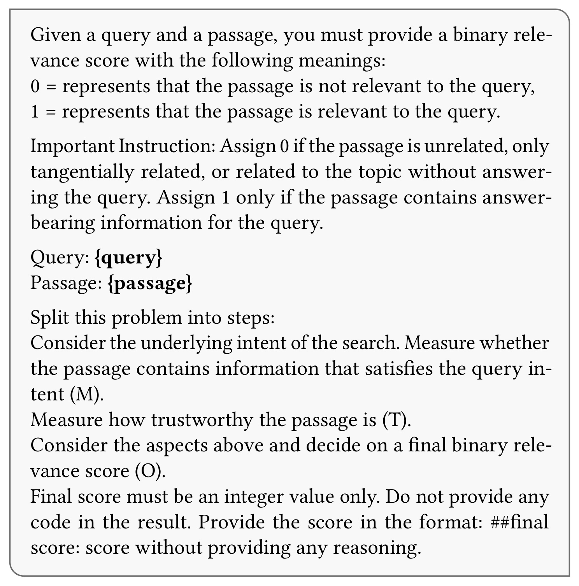
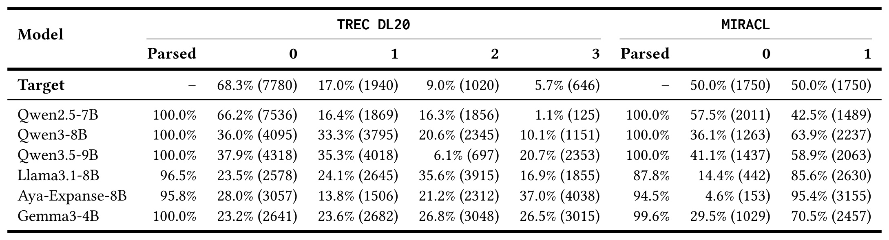
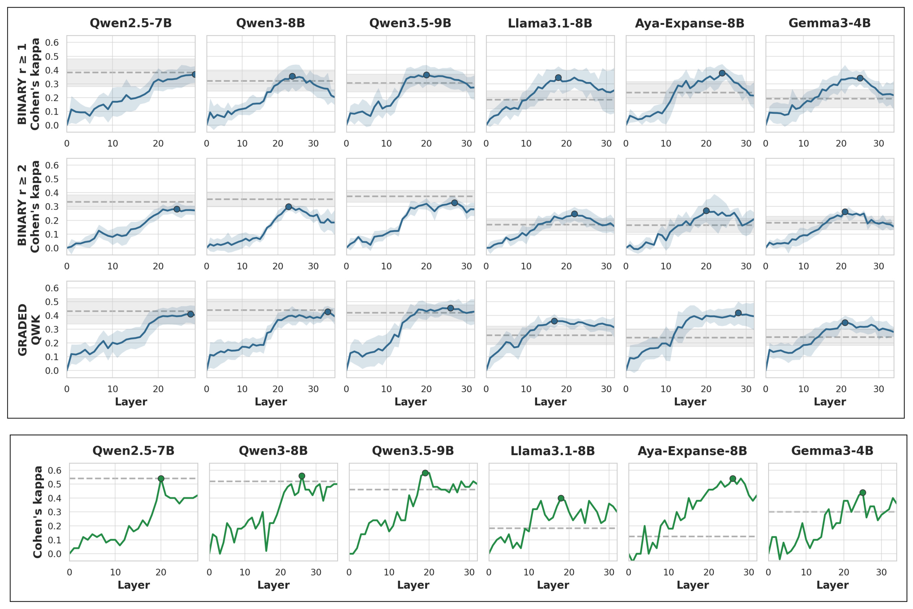
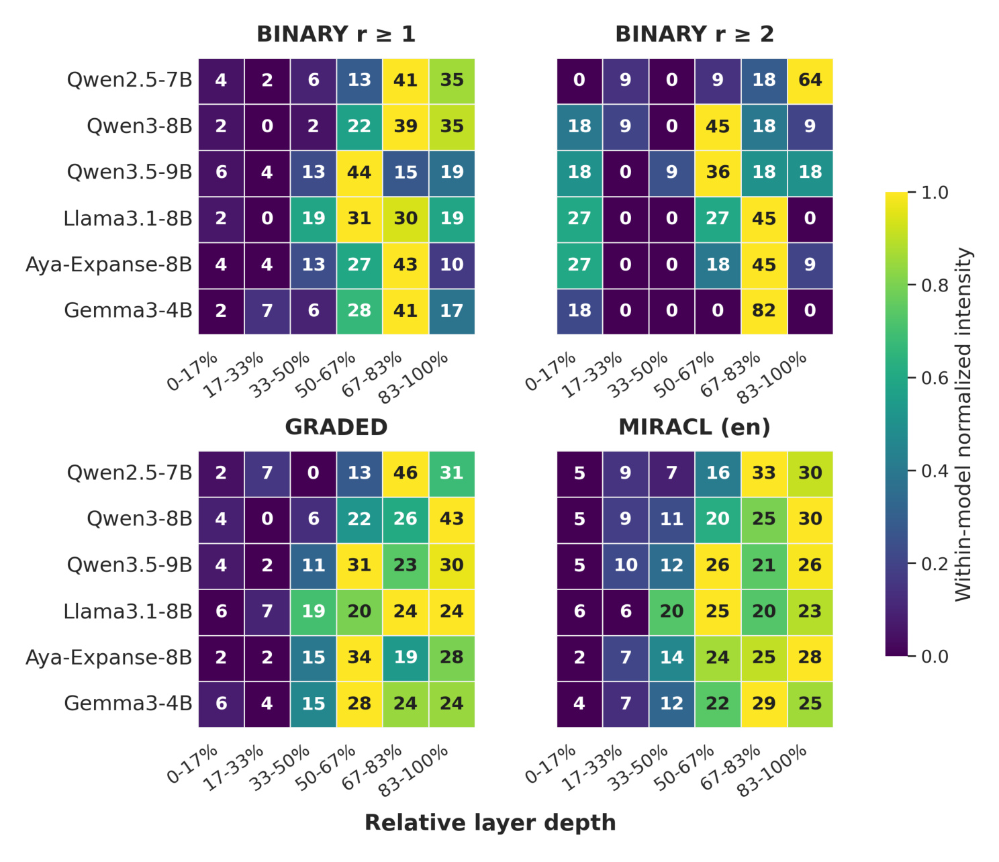
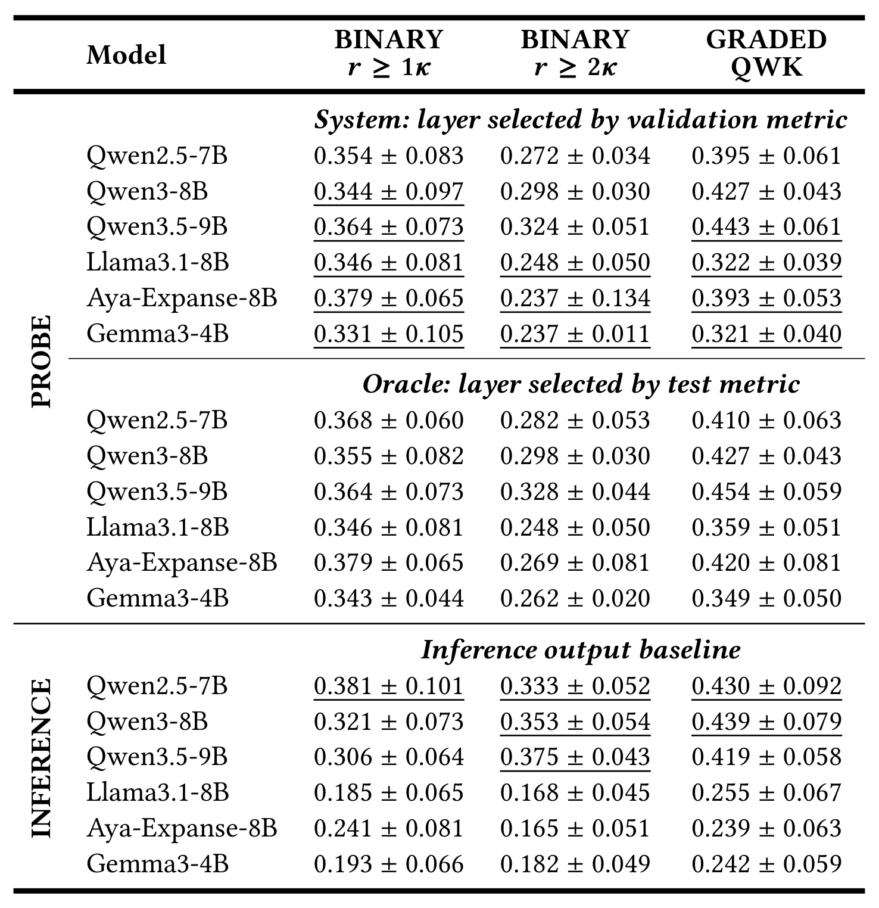
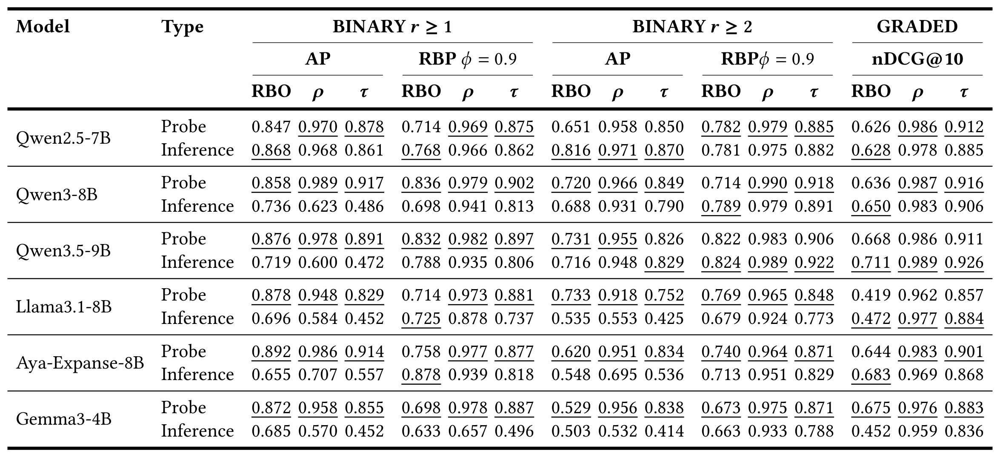
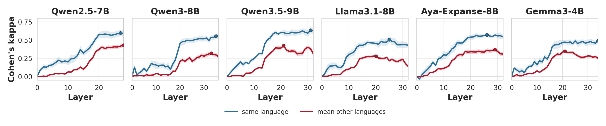
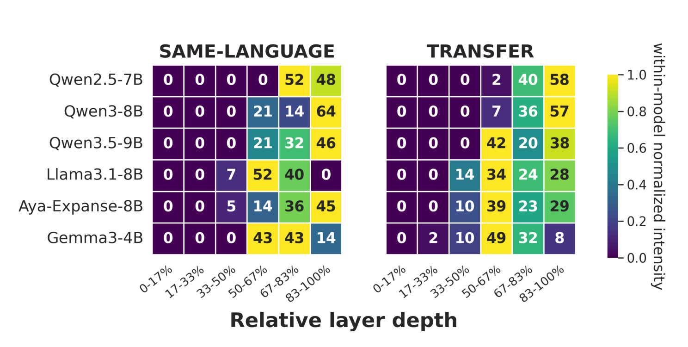

LLMs Encode Relevance as a Layer-Wise Cross-Lingual Signal：逐层读出大模型的跨语言相关性信号
这篇 CIKM’26 论文来自昆士兰大学 Pietro Bernardelle、Samaneh Mohtadi、Stefano Civelli、Joel Mackenzie 与 Gianluca Demartini，研究对象不是又一种生成式重排器，而是 LLM 在给出相关性标签之前，内部究竟有没有形成可读出的 query-document relevance 表征。论文于 2026 年 7 月 17 日提交至 arXiv，可从 arXiv:2607.15555 阅读；作者给出的匿名工件页 probing-relevance 已可定位，但正式 GitHub 仓库与论文 DOI 尚未公开。
只看 LLM 最终生成的相关性标签，无法区分模型内部根本没有形成相关性证据，还是已经形成证据却在输出格式、标签尺度或生成阶段表达失败；也无法回答该信号在第几层出现、能否跨语言复用。
1. 背景和问题
相关性是信息检索的中心变量。经典检索器虽然能力有限，却留下了 BM25、词频、逆文档频率、query likelihood 和显式排序特征等可追踪信号：某篇文档为什么进入候选、为什么被排到前面，工程人员至少能沿词项匹配与特征权重寻找原因。LLM 被用于 query expansion、reranking、问答、对话搜索和 relevance assessment 后，判断链路变成高维隐状态中的分布式计算。系统最终只看到一个 0/1 标签、0–3 等级、排序列表或解释文本，却看不到模型在前向传播中何时整合了查询意图、文档证据和评分指令。
现有 LLM judge 评测大多停留在输出层：比较生成标签与人工 qrels 的 Cohen’s kappa，或者比较这些伪标签诱导出的系统排行榜与官方排行榜。这当然必要，但它把至少三种误差混在了一起。第一，模型可能没有理解 query-document 关系；第二，模型可能理解了，却偏好某些等级，造成边际分布失真；第三，模型可能有正确倾向，却没有遵循“只输出一个整数”的格式而解析失败。若一个模型大量输出高相关等级，标签 agreement 变差并不能直接证明它的内部表征没有相关性信息；相反，偶然输出正确也不证明它依赖的是稳健语义，模型可能只利用词面重合或提示格式。
论文由此提出一个更细的诊断层次：冻结 instruction-tuned LLM，在同一次 relevance-judgment 前向传播中读取每个 Transformer 层的 residual stream，再训练最简单的线性探针预测人工相关性。线性探针不是为了追求最强分类器，而是把问题限定为“相关性是否已经以线性可访问的方式存在”。若浅层不可解码、中后层可解码，就说明这不是输入词面立即暴露的信号，而更可能来自查询、文档与指令经过若干层上下文整合后的表征。若探针比同一模型最终输出更接近人工标签，则出现作者所说的 representation–expression gap：内部已有证据，外部生成却未忠实表达。
研究围绕三项问题组织。RQ1 问 query-document 相关性是否能从 residual stream 线性解码，以及最佳层位于何处；RQ2 比较内部探针与显式生成判断，不只看单条 q-d 标签，还看伪标签能否保住 TREC 官方系统排序；RQ3 则把同一探针框架扩展到 MIRACL 的七种原生语言，检查一种语言训练的读出器能否在另一语言直接工作。三个问题共同把“LLM judge 准不准”拆成表征是否形成、表征能否被稳定选层读出、生成接口是否扭曲表征、跨语言共享程度有多高四个可检验环节。
这个拆分与搜索、推荐系统都有直接关系。离线评测经常需要昂贵 qrels，LLM 伪标签因成本低而有吸引力；但如果生成标签的尺度偏置足以改变系统相对次序，那么用它做模型选型会产生错误决策。内部探针提供的是另一条评分出口：它可能绕开自然语言生成和格式解析，并把“哪一层最能代表相关性”变成可观测诊断。对多语言搜索或内容推荐，跨语言读出还关系到低资源语言能否借用高资源监督。论文的价值并非宣称 probe 可以取代人工标注，而是给出一套区分内部证据、外部表达和系统级后果的实验方法。
需要提前守住一个解释边界：线性可解码不等于模型在因果上使用了这个方向。探针可能从隐状态中读出与标签相关的伴随信息，却不能证明后续生成头依赖同一信息。论文做的是 representation-level measurement，而不是 activation intervention。它回答“信息能否被简单读出”，不能单独回答“改变该方向会不会改变相关性判断”。理解这一点，才能避免把漂亮的层深曲线误写成机制因果结论。
2. 方法
2.1 统一提示与输出判断
论文使用两个互补数据集。TREC Deep Learning 2020 passage ranking 来自 MS MARCO，含 54 个查询和 11,386 条 0–3 级人工判断，还附有官方 submitted runs，因此既能测单条标签一致性，也能重建系统排行榜。MIRACL 用来测原生多语言迁移：作者选择 English、Chinese、French 三种较高资源语言，以及 Arabic、Japanese、Swahili、Telugu 四种不同文字与类型的语言；每种语言抽 250 个 query，每个 query 各取一条相关和不相关文档，得到平衡二分类样本。这里不是把英文样本机器翻译成七种语言，而是使用各语言 Wikipedia collection 的原生 query 与 document，因而跨语言结果面对真实词汇和语法差异。
TREC 原始等级为 \(r\in\{0,1,2,3\}\)。作者保留 graded setting，同时构造两种二值口径：\(r\ge1\) 把“有任何相关性”算正例，\(r\ge2\) 只把明确 answer-bearing 的 2、3 级算正例。两种标签都来自同一套人工 qrels，却对应不同的检索效用定义；用指示函数写成：
符号解释：\(r\) 是人工 0–3 级标签，\(y^{(1)}\) 与 \(y^{(2)}\) 分别是宽松和严格二值标签，\(\mathbb{I}[\cdot]\) 在条件成立时取 1。两种阈值的难点不同：\(r\ge2\) 会把“主题相关但不足以回答”的 grade 1 与完全无关 grade 0 合成负类，探针必须区分真正回答性而非只识别主题接近。
六个模型被限制在相近的 4B–9B 尺度：Qwen2.5-7B、Qwen3-8B、Qwen3.5-9B、Llama3.1-8B、Aya-Expanse-8B 与 Gemma3-4B，Qwen3/3.5 使用 no-thinking 配置。所有 q-d pair 都进入 UMBRELA-style relevance prompt，并套用模型自己的 chat template；生成端 temperature=0，以排除采样随机性。TREC 使用 0–3 graded prompt，MIRACL 使用论文专门改写的二元提示。

Figure 1 展示了 MIRACL 的实际输入约束。它先定义 0/1：只有 passage 含有满足查询意图的 answer-bearing information 才能标 1，主题沾边、旁支相关或没有回答查询都应标 0；随后要求模型依次考虑检索意图满足度 \(M\)、内容可信度 \(T\)，再形成最终输出 \(O\)。最后一条指令禁止解释，只允许按固定格式给整数。这个设计非常关键，因为探针与生成基线看到的是同一份 query、passage 和判断标准，差别只在读出位置：生成基线等待模型产生文本并解析标签，探针在回答生成前读取最后一个输入 token 的内部状态。于是两者差异不来自提示内容不同，而来自内部表征读出和外部语言表达这两个环节。
2.2 从最后一个提示 token 读取逐层 residual stream
对每个模型、提示和 q-d 样本，作者只做一次冻结模型的 forward pass，然后读取每个 Transformer 层最后一个输入 token 的 residual-stream activation。该 token 位于答案生成之前，已经 attend 到完整 instruction、query 和 document，因此是生成最终判断的起点。对样本 \(i\) 和第 \(\ell\) 层，表示为：
符号解释：\(i\) 标识一条 query-document 样本，\(\ell\) 标识层，\(d\) 是隐藏维度，\(h_i^{(\ell)}\) 是该层最后一个 prompt token 的 residual-stream 向量。作者没有池化全部 query/document token，也没有读取生成后 token，因此结论严格限于这一位置选择。
若模型共有 \(L\) 层，每条样本会得到完整深度轨迹。作者不把其中某一层预先指定成“语义层”，而是在每个层位保留同构样本矩阵，让后续 probe 用完全相同的训练与测试切分比较线性可读性。这样，层深曲线的变化来自表征本身，不是各层用了不同数据：
符号解释：\(\mathcal{H}_i\) 是样本 \(i\) 的逐层状态集合，\(L\) 是层数。不同模型层数不等，所以论文既画绝对 layer index 曲线，也在查询级和跨语言峰值分析中把层位置分桶为 0–17%、17–33%、33–50%、50–67%、67–83%、83–100% 的相对深度，避免把 28 层和 36 层模型硬按同一绝对编号比较。
这一抽取位置有明确好处：它把模型在读完全部证据后的状态与生成阶段分开，且部署时理论上可以提前终止到选定层后读出标签，省去自回归答案解析。不过它也造成范围限制：如果相关性信息分布在 query/document span 的多个 token，或只在生成第一个 answer token 后更加集中，最后输入 token 的单点探针可能低估可用信息。论文在结论中因此把 richer activation summaries 列为后续方向。
2.3 线性探针、查询分组与验证集选层
作者为每一层独立训练 ridge-regularized linear probe。二分类用 logistic regression，TREC 的 0–3 graded setting 用 ordinal logistic regression，保留等级次序而不是把四个标签视为互不相关类别。统一映射写成：
符号解释：\(f_{\ell}\) 是第 \(\ell\) 层独立拟合的线性读出器，\(\hat y_i^{(\ell)}\) 是对应样本的相关性预测。逐层独立训练意味着 Figure 2 的每个点都对应一个单独 probe，不是同一分类器沿网络传播的中间输出。
对二元 probe，其目标可展开为带 \(L_2\) 正则的逻辑损失。这里特意不加入隐藏层、注意力池化或非线性特征工程；若简单超平面已经能在未见 query 上分开正负样本，才有理由说 relevance 在这一 residual stream 中呈线性可访问状态：
符号解释：\(w,b\) 是线性 probe 参数，\(p_i\) 是正相关概率，\(\sigma\) 是 sigmoid，\(\alpha\) 控制 ridge 正则强度。该展开对应论文“regularized logistic-regression probes”的描述；它强调容量被限制在线性边界，探针成功说明标签在这一层已近似线性分离，而不是一个强非线性解码器重新学习了检索任务。
最容易产生虚高结果的是 query leakage：同一 query 的一篇文档进入训练、另一篇文档进入测试，分类器就可能记住 query 特征而非泛化到新查询。论文因此按 query 分组。TREC 用 grouped 5-fold outer cross-validation；54 个 query 分成四个 11-query test fold 和一个 10-query test fold，outer train 再拆训练/验证组。MIRACL 用 query-language 组做固定 60%/20%/20% 切分，所有模型复用同一 split。这个设计使 test performance 真正对应 unseen query。
每层都在同一网格搜索正则。统一搜索范围是一个必要控制，因为 residual stream 的尺度和共线性会随模型、层位改变；若各层使用不同的随意调参预算，深度曲线可能反映超参优势而非信息形成过程。论文对所有层采用以下对数间隔候选：
符号解释：\(\alpha\) 越大，线性权重收缩越强；binary probe 用验证集 Cohen’s \(\kappa\) 选值，graded probe 用 quadratic weighted \(\kappa\)。作者同时在验证集选择层和 \(\alpha\)，再只在 test 上评估一次，这组叫 system probe。另报告 test 指标回看后挑最佳层的 oracle probe，只作为“某处最多可读出多少”的上界，不能用于主张可部署性能。
方法的关键控制不是找到全局最佳层，而是把“可解码上界”和“仅凭开发集可选到的层”分开。如果只报告 oracle，任何锯齿曲线都容易因 test selection 产生乐观偏差；验证选层接近 oracle，才说明层深区域可由有限开发标签稳定定位，并使 probe 与生成输出的比较具有真实部署含义。
2.4 三个研究问题如何落到可检验实验
Experiment 1 在 TREC 两个二值阈值、TREC graded 与 MIRACL English 四种 setting 中，对所有模型逐层拟合 probe，使用 held-out \(\kappa\)/QWK 画深度曲线，直接回答 RQ1。Experiment 2 只在 TREC 上比较 validation-selected probe 与 temperature-zero 生成标签：先测 q-d label agreement，再用两种伪标签重算官方 runs 的 AP、RBP 或 nDCG@10，并比较它们与 gold leaderboard 的相关性。Experiment 3 在 MIRACL 七种语言上比较 same-language 与 cross-language probe；source language 训练好后，不在 target language 微调，直接得到：
符号解释：\(f_s\) 是在源语言 \(s\) 训练的探针，\(D_t\) 是目标语言 \(t\) 的 held-out test split，\(M_{s,t}\) 是 Cohen’s \(\kappa\) 性能。\(s=t\) 是同语言上界，\(s\ne t\) 是真正的零目标语言监督迁移；论文的红线对每个模型汇总其他语言 pair 的均值。
标签级核心指标 Cohen’s kappa 校正了随机一致。该选择尤其适合 Table 1 所示的预测边际失衡：一个总猜正类的模型可能在正类多的数据上得到不低的 accuracy，但其超出随机边际的有效一致性会被 kappa 明显扣减。二元任务采用标准形式：
符号解释：\(p_o\) 是实际预测与人工标签一致率，\(p_e\) 是由两边标签边际分布推得的随机一致率。它比 accuracy 更适合本论文，因为 Table 1 显示某些模型强烈偏向正类或高等级；单看 accuracy 会掩盖这种边际偏置。graded setting 使用 quadratic weights，让 0 与 3 的错误惩罚大于 2 与 3。
系统级二值 effectiveness 除 AP 外还用 Rank-Biased Precision。AP 汇总相关文档命中的精度轨迹，RBP 则把用户继续浏览行为显式写入位置权重；两者并用，可以判断伪标签对全局命中和前部排序的影响是否一致。论文将 persistence 固定为 0.9：
符号解释：\(r_k\) 是第 \(k\) 位的二值相关性，\(\phi\) 是用户继续浏览下一位的概率；\(\phi=0.9\) 强调前部但仍观察较深排名。论文再用 RBO、Spearman \(\rho\) 和 Kendall \(\tau\) 比较伪标签排行榜与 gold 排行榜，分别强调 top overlap、单调次序和成对次序。
graded setting 用 nDCG@10，它既保留 0–3 级差异，又只考察最重要的前十位。与先做 \(r\ge1\) 或 \(r\ge2\) 二值化不同，grade 3 的收益在这里远高于 grade 1；因此它能检查生成端偏爱高等级是否扭曲 top-ranked system 比较：
符号解释：\(r_k\) 是位置 \(k\) 的 0–3 级相关性，分子按等级增益和对数位置折损累积，\(\operatorname{IDCG@10}\) 是同一结果集合的理想排序归一化值。它保留 graded qrels，而不是先阈值化；因此 Table 3 中 graded 结果检验的是 probe 是否保住 top-10 的等级结构。
3. 实验结果
3.1 数据、模型与生成标签诊断
实验规模不是大参数竞赛，而是控制在能逐层取 activation 的 4B–9B 模型。六个模型覆盖三代 Qwen、Llama、偏多语言的 Aya 与 Gemma，既有 family 内比较，也有跨训练体系比较。MIRACL 共七种语言、每种 500 个平衡 pair；TREC 则是严重偏斜的 graded distribution。完整流水线包括确定性生成、每层 activation 抽取、probe training 和超参/层选择，在单张 NVIDIA RTX 5090 上约运行一天半。这个成本说明 probing 虽省去人工重新标注，却不是免费的线上附件：保存全层状态和训练大量 layer×fold×alpha 组合会产生明显离线成本。

Table 1 首先解释为什么“最终输出差”不能直接等价为“内部没有相关性”。TREC 人工分布中 grade 0 占 68.3%，grade 3 仅 5.7%；Qwen2.5-7B 的生成分布最接近这一形状，0 占 66.2%、3 仅 1.1%，且全部可解析。反之，Aya-Expanse-8B 把 37.0% 的 parsed TREC 样本判为 grade 3，Llama 与 Gemma 也显著高估 2/3 级。MIRACL 明明按 50/50 构造，Aya 却把 95.4% 的 parsed 输出判为 1，Llama 为 85.6%，同时解析率只有 87.8%。这些差异同时包含标签尺度偏好、正类倾向和指令格式服从。探针不生成文本，不会有 parsing failure，而且直接用人工边际监督，因此它可能在不改变 LLM 主干的情况下校正最终生成接口的偏置。需要注意，这也意味着 probe 的优势依赖标注开发集，不能被描述成无监督发现。
3.2 相关性沿模型深度如何形成

Figure 2 是 RQ1 的主证据。横轴是 layer，纵轴是 held-out kappa 或 QWK；蓝线为 probe，浅蓝带表示 fold 变化，圆点是对应 held-out metric 下的最佳层，灰虚线与灰带是生成输出基线及其变化。无论 TREC 的 \(r\ge1\)、\(r\ge2\)、graded，还是 MIRACL English，早层几乎都接近零或明显低于后段，随后在网络中部上升，最佳点多落在中后层。比如多个 Qwen setting 在约 20 层附近形成台阶式提升，Llama、Aya、Gemma 也呈相近形状。这支持“相关性在整合 query、document 与 instruction 后变得更线性可访问”，而不是输入 token 一进入模型就以词面信号存在。曲线晚段有时回落，说明最终层可能为特定输出格式或语言生成重新组织表征，线性可读性不必在最后一层单调最大。
图中 \(r\ge2\) 比 \(r\ge1\) 更锯齿、模型间差异也更大。严格阈值的负类混合 grade 0 与 grade 1：后者往往主题相关，却不具备足够 answer-bearing evidence。模型必须在“相关”与“能回答”之间划界，不同 query 可能依赖不同层的语义整合，因此最佳深度不如宽松阈值集中。MIRACL English 的 Qwen3/Qwen3.5/Aya 曲线后段达到较高 kappa，但这些值仍是抽样二分类任务上的线性可解码性，不能直接外推成完整 reranking 的 nDCG 改善。

Figure 3 把平均曲线拆到 query 层面。每个单元格表示某模型的 query-level Top-1 probe performance 有多少比例落在对应相对深度桶；若多个层并列最佳，质量在这些桶之间均分。四个面板都显示最早两个桶通常只占极小比例，而 50–67%、67–83%、83–100% 承担大多数峰值。\(r\ge1\) 中 Qwen2.5、Qwen3、Aya、Gemma 的 67–83% 桶约为 39%–43%；\(r\ge2\) 更分散，Qwen2.5 有 64% 峰值在最后桶，Gemma 则有 82% 落在 67–83%。MIRACL English 的质量也主要分布在后三个桶。这个查询级结果排除了“几条容易 query 抬高平均曲线”的简单解释，同时保留了一个重要事实：不存在适用于所有模型、阈值和 query 的固定最佳层，真实系统仍需要开发集选层或自适应路由。
3.3 内部探针与生成式判断的标签一致性

Table 2 的上半部是可部署的 validation-selected system probe，中间是利用 test metric 选层的 oracle 上界，下半部是生成输出。结果不是“probe 全面胜过 generation”，而是明显按模型和相关性定义分化。Qwen2.5 的生成判断在三列都更高：\(r\ge1\) kappa 为 0.381，对 probe 的 0.354；\(r\ge2\) 为 0.333，对 0.272；graded QWK 为 0.430，对 0.395。这与 Table 1 中它较贴近人工分布相呼应。Qwen3/3.5 在严格 \(r\ge2\) 的生成端仍强，但在宽松 \(r\ge1\) 上 probe 更好；Qwen3.5 graded probe 0.443 也高于生成的 0.419。
真正支持 representation–expression gap 的是 Llama、Aya 与 Gemma。Llama 的 probe 从生成端的 0.185/0.168/0.255 提高到 0.346/0.248/0.322；Aya 从 0.241/0.165/0.239 提高到 0.379/0.237/0.393；Gemma 从 0.193/0.182/0.242 提高到 0.331/0.237/0.321。它们恰好也是 Table 1 中高等级或正类偏置较强的模型，说明最终标签失真时，某个中后层仍保留更接近人类 qrels 的线性方向。与此同时，system probe 多数接近 oracle：例如 Qwen3 的三项数值完全相同，Qwen3.5 差距也很小；Aya 的严格阈值虽从 0.237 到 oracle 0.269，仍未改变总体判断。这减少了“优势只是 test 后挑层”的担忧，但 Aya 的较大标准差也提示小 query 数导致的选层不稳定。
3.4 伪标签能否保住检索系统排序
标签 agreement 并非离线评测的终点。模型开发者更关心：把人工 qrels 换成 LLM 伪标签后，哪个 retrieval run 更好这一结论是否还成立。作者用 TREC 官方 runs，分别按二值 AP、RBP \(\phi=0.9\) 与 graded nDCG@10 排系统，再用 RBO、Spearman \(\rho\)、Kendall \(\tau\) 与 gold leaderboard 比较。这里全局单调顺序、成对次序和榜首重合是不同目标，因此必须同时看三类相关性。

Table 3 显示 probe 的优势最稳定地出现在 Spearman \(\rho\) 与 Kendall \(\tau\)，尤其是宽松 \(r\ge1\)。Qwen3 的 AP 排行中，probe 达到 RBO/\(\rho\)/\(\tau\)=0.858/0.989/0.917，而 generation 只有 0.736/0.623/0.486；Qwen3.5 对应为 0.876/0.978/0.891，对 0.719/0.600/0.472。Llama、Aya、Gemma 也有类似大幅改善。以 Aya 的 \(r\ge1\) AP 为例，probe 为 0.892/0.986/0.914，generation 为 0.655/0.707/0.557。说明 probe 不只是多猜对一些 pair，而是更好保住系统总体相对强弱。
但 RBO 和严格/graded setting 更混合。Aya 在 \(r\ge1\) 的 RBP 上，generation RBO 0.878 高于 probe 0.758，虽然 probe 的 \(\rho\)/\(\tau\) 仍较高；Qwen3.5 的 graded generation 也在 RBO/\(\rho\)/\(\tau\) 上略占优。RBO 更偏榜首，可能出现生成标签较差地排列中尾部系统，却碰巧保住 top runs 的情况。Qwen2.5 同样是重要反例：生成判断已经与 gold 榜单高度一致，probe 的提升空间有限。结论因此应写成“内部读出在若干偏置模型和宽松相关性定义下更稳地恢复全局/成对系统顺序”，而不是“探针在所有 leaderboard metric 上取代生成标签”。
3.5 跨语言迁移：共享信号存在但不充分
跨语言实验使用完全相同的 MIRACL query-safe split。same-language probe 在某语言的 train 上拟合、在同语言 test 上评估；transfer probe 在源语言训练后直接应用于其他目标语言，既不调权重也不看目标 test 标签。因为七种语言使用各自原生 query-document，而非平行翻译，跨语言成功要求 probe 捕捉某种共享的关系语义，而不能依赖相同 surface form。

Figure 4 中蓝线是七种 same-language 结果的均值，红线是其他语言 transfer pair 的均值。六个模型上蓝线都高于红线，说明 relevance direction 并非完全 language-agnostic；但红线并不平坦，而是像蓝线一样从早层接近零、在中后层快速上升。Qwen2.5 的同语言峰值约 0.60，跨语言约 0.43；Qwen3.5 约 0.63 对 0.42；Llama 约 0.50 对 0.28。不同模型的绝对高度不可脱离采样和层数直接排序，但共同形状很清楚：可迁移信息不是浅层提示模板造成的，否则它应更早出现；它与 query-document 语义经过大部分网络整合后的深度区域同步形成。
红线后段有时下降或波动，尤其 Llama、Gemma 和 Qwen3.5，提示最终层在为具体语言的生成行为专化时，跨语言线性对齐可能变弱。Aya 虽以多语言能力见长，也没有消除蓝红差距。这提醒低资源检索不能把英语 probe 直接当成本地 qrels 替代品；共享方向可以提供初始化或诊断，但仍需要目标语言校准。

Figure 5 进一步比较峰值位置。same-language 几乎没有峰值落在前三个深度桶：Qwen2.5 有 52%/48% 分布在 67–83% 与 83–100%，Qwen3 有 64% 落在最后桶；Llama 则主要落在 50–67% 和 67–83%。transfer 同样偏后，但更分散：Qwen3.5 有 42% 在 50–67%、20% 在 67–83%、38% 在最后桶；Llama 从 33–50% 起就出现 14%，后三桶为 34%/24%/28%；Gemma 甚至在 17–33% 有少量峰值。也就是说，跨语言 relevance 不是一个固定层面的“统一语义轴”，而像共享语义与语言特定结构的混合，不同 source-target pair 在不同深度达到最好线性对齐。
把 Figure 4 与 Figure 5 合起来，RQ3 的最稳妥回答是“部分可迁移”。性能随深度增长且明显高于早层，支持共享高层语义；同语言始终更强、峰值更集中，则证明语言特定监督仍重要。论文没有给出每个 source-target pair 的完整性能矩阵，也没有单独讨论文字系统或资源量对差距的贡献，因此不能从均值曲线推出“中文到日文优于英语到斯瓦希里语”等具体语言对结论。
4. 总结
4.1 我的判断
这篇论文最扎实的贡献是把 LLM relevance judge 从单一输出分数拆成三个互相可比较的层次：内部逐层线性可解码性、最终生成标签、伪标签诱导的系统排行榜。Figure 2/3 说明相关性通常在中后层才变得可读；Table 1/2 将部分模型的高等级偏置与 probe 优势连接起来；Table 3 又证明差异能传导到系统选择；Figure 4/5 则把同一诊断延伸到跨语言。证据支持“内部表示与外部表达可以分离”，但不支持“probe 永远优于 generation”，Qwen2.5 和若干严格/graded 指标就是明确反例。
4.2 对检索与推荐工程的启发
在线排序不宜直接把全层 probe 当新服务链路，但它很适合离线诊断。团队可以在固定 judge prompt 下同时记录生成标签、边际分布、解析率和少数候选层 activation：若线上候选模型的输出突然偏正，而内部 probe 仍稳定，问题更可能在 prompt、label calibration 或 decoding；若内部信号也消失，才应回到 query-document 表征和训练数据。对多语言推荐，可先用高资源语言 probe 寻找共享深度区，再用少量目标语言 qrels 校准，而不是假定一个英语线性头可零成本覆盖所有语言。系统级验收也应同时报告 \(\rho/\tau\) 与 top-weighted RBO，避免“全局排序保持”掩盖榜首模型被换位。
4.3 局限与后续跟进
局限至少有五点。第一，可解码性不是因果性，没有 activation patching 或方向干预来证明生成头实际使用 probe 读出的向量。第二，只读取最后一个 prompt token，可能遗漏分布在 query/document span 或生成后 token 的信号。第三，最佳层与正则仍依赖人工 validation qrels，不能视为免标注评测。第四，模型限于 4B–9B instruction-tuned LLM、单一 UMBRELA-style prompt，结论未覆盖大型闭源 judge、专门 reranker 或不同提示尺度。第五，MIRACL 使用每语言 250 query 的平衡抽样，且只展示语言聚合曲线；真实流量的类别偏斜和具体语言对可能改变迁移结论。匿名工件可访问，但正式版本、稳定 DOI 与长期仓库仍待确认。
后续最值得做四项复现。其一，在最佳层附近做 causal intervention：抑制或增强 probe direction，观察生成标签和排行榜是否按预期变化，从相关走向机制。其二，比较 last-token、query-span pooling、document-span pooling 与多 token 低秩读出，确认曲线是否依赖位置选择。其三，在 BEIR、多语言商品搜索和真实曝光负样本上复现，并按 query 难度、语言资源量、文档长度拆分结果。其四，把 probe 作为 judge calibration signal，与生成概率、self-consistency 和少量人工 qrels 组合，测量精度、GPU 显存、吞吐与系统排序稳定性的成本前沿。只有完成这些检查，内部 relevance signal 才可能从解释工具走向可靠评测组件。